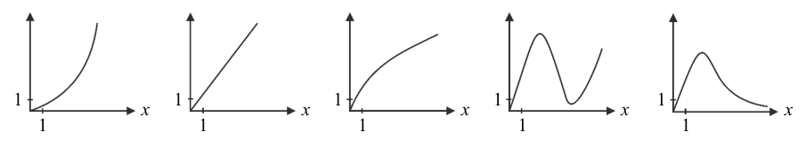

學科能力測驗數學B歷屆試題
開卷有益收錄學科能力測驗「數學B」民國 111–115 年的歷屆試題，共 5 份考卷、100 題，其中 100 題附有逐題詳解。每一份考卷都有獨立頁面，可以整卷看題目與答案，也可以直接線上作答。
線上練習 數學B →
本科概況
| 科目 | 數學B（學科能力測驗） |
|---|
| 題數 | 100 題 |
|---|
| 考卷份數 | 5 份 |
|---|
| 涵蓋年份 | 民國 111–115 年 |
|---|
| 詳解 | 100 題（100%） |
|---|
| 資料來源 | 大考中心 學測歷年試題（依著作權法 §9，考試試題不受著作權保護） |
|---|
| 費用 | 免費，不需註冊，無廣告 |
|---|
數學 B 卷（社會組導向），偏應用與資料判讀。
歷年考卷（5 份）
點任一年度可看整份試題與標準答案。
題目長什麼樣
以下自本科題庫抽 5 題示例，完整題目請看上方各年度考卷。
第 1 題
當標準值為 95，試選出有幾個整數 \(N\) 與標準值的誤差百分比 \(\dfrac{|N-95|}{95}\times100\%\) 小於 5%。
- （A）4 個
- （B）5 個
- （C）8 個
- （D）9 個
- （E）10 個
答案：（D）
詳解與考點
正解：題幹給誤差百分比小於 5％，先化為絕對值不等式，再列出所有整數。|N−95|／95×100％＜5％，兩邊除以 100％得 |N−95|／95＜0.05；兩邊乘 95 得 |N−95|＜4.75。故 −4.75＜N−95＜4.75，90.25＜N＜99.75。整數 N 為 91、92、93、94、95、96、97、98、99，共 9 個，故 D 正確。
A：4 個未依絕對值範圍完整列舉整數，故錯誤。
B：5 個只取接近 95 的部分整數，漏掉 91、92、98、99 等符合者。
C：8 個少算一個符合範圍的整數。
E：10 個會把不符合嚴格不等式範圍的端點外整數納入，故錯誤。
本題考點：誤差百分比——先將百分比改為小數再移項；絕對值不等式——|x−a|＜r 等價於 a−r＜x＜a＋r；整數計數——依開區間逐一列出整數。
第 1 題
設數線上有一點 \(P\) 滿足 \(P\) 到 1 的距離加上 \(P\) 到 4 的距離等於 4。試問這樣的 \(P\) 有幾個？
- （A）0 個
- （B）1 個
- （C）2 個
- （D）3 個
- （E）無限多個
答案：（C）
詳解與考點
正解：題幹是兩定點距離和，先把 P 的坐標設為 x，利用絕對值分區討論。條件為 |x-1|+|x-4|=4。當 1≤x≤4 時，|x-1|+|x-4|=(x-1)+(4-x)=3，不等於 4，因此區間內無解。當 x>4 時，(x-1)+(x-4)=4，2x-5=4，2x=9，x=4.5，符合 x>4。當 x<1 時，(1-x)+(4-x)=4，5-2x=4，-2x=-1，x=0.5，符合 x<1。共有 2 個 P，故 C 為正解。
A：左、右區間各可解出一點，不是 0 個。
B：只算到一側的 x=4.5 或 x=0.5，漏掉另一側的對稱情形。
D：1 到 4 之間距離和恆為 3，不能再提供第 3 個解。它看起來對，是因為容易誤以為兩定點之間的點也會使距離和隨位置改變。
E：距離和在區間內固定為 3，區間外各只有一個一次方程式解，故非無限多個。
本題考點：數線絕對值距離——先依定點位置分成 x<1、1≤x≤4、x>4；兩定點間的距離和恆等於兩定點距離，目標值較大時解只會落在區間外。
第 1 題
某遊戲共有 210 位玩家，每位玩家均持有寶石，其中持有 1 顆的有 1 位，持有 2 顆的有 2 位，依此類推，持有 20 顆寶石的有 20 位。試問這些玩家每人持有寶石數量的第 90 百分位數為下列哪一個選項？
- （A）16
- （B）17
- （C）18
- （D）19
- （E）20
答案：（D）
詳解與考點
正解：本題求第 90 百分位數，資料共有 210 筆，90% 對應位置為 210×90/100=189。因 189 是整數，依百分位數規則取第 189 筆與第 190 筆資料的平均。持有 18 顆者累積人數為 1+2+…+18=18×19/2=171；再加上持有 19 顆的 19 人，累積人數為 171+19=190。因此第 189 筆與第 190 筆都在「持有 19 顆」這一組，百分位數為 (19+19)/2=19，D 為正解。
A：16 顆以前的累積人數為 1+2+…+16=16×17/2=136，第 189、190 筆不在此範圍，A 錯誤。
B：17 顆以前的累積人數為 1+2+…+17=17×18/2=153，第 189、190 筆不在此範圍，B 錯誤。
C：18 顆以前的累積人數是 171，尚未到第 189 筆；把 90% 的位置誤停在累積到 18 顆，是漏算第 172 至第 190 筆皆屬 19 顆組，C 錯誤。
E：20 顆組從第 191 筆開始，因為累積至 19 顆已是第 190 筆，所以第 189、190 筆不會是 20，E 錯誤。
本題考點：百分位數——先算資料位置 n×p/100，位置為整數時取該筆與下一筆的平均；累積次數判準——先以 1+2+…+k=k(k+1)/2 找出資料所在組，再讀取該組數值。
第 1 題
某抽水站發現其用電量（單位：度）與抽水馬達轉速（單位：rpm）的三次方成正比。根據上述，試問下列這五個圖中，哪一個最可以描述此抽水站的用電量 \(y\)（度）與抽水馬達轉速 \(x\)（rpm）的對應關係？

- （A）圖(1)：通過 (1,1) 後上凹遞增的曲線
- （B）圖(2)：通過 (1,1) 的遞增直線
- （C）圖(3)：通過 (1,1) 後上凸遞增的曲線
- （D）圖(4)：先增後減再增的波動曲線
- （E）圖(5)：先快速上升至峰值後遞減趨近 x 軸的曲線
答案：（A）
詳解與考點
正解：用電量 y 與轉速 x 的三次方成正比，先設 y=kx³，其中 k＞0。轉速只能取 x≥0；當 x＞0 時，y'=3kx²＞0、y''=6kx＞0，所以圖形通過原點，且在正半軸持續遞增、凹向上。官方答案為 A；惟題幹只能推出 y=kx³，不能推出圖形必通過 (1,1)，因為代入 x=1 得 y=k，只有 k=1 時才通過 (1,1)。A 所示曲線的遞增且凹向上形態最符合上述判準。
B：遞增直線可寫成 y=kx，其斜率固定為 k；但三次正比的斜率是 y'=3kx²，會隨 x 增大，不符。
C：上凸遞增代表 x＞0 時二階導數小於 0；然而 y=kx³ 的 y''=6kx＞0，正負相反。
D：先增後減再增表示中途有區間滿足 y'＜0；但 y'=3kx²≥0，且 x＞0 時 y'＞0，不會下降。
E：先升至峰值後遞減，表示峰值後 y'＜0，並趨近 x 軸；但 y'=3kx²＞0，且 x→∞ 時 y=kx³→∞，兩項皆不符。
本題考點：三次正比函數——先寫成 y=kx³（k＞0），以 y'=3kx² 與 y''=6kx 判斷正半軸遞增且凹向上；函數圖形判準——比例常數 k 決定尺度，不能由「成正比」逕自認定 k=1。
第 1 題
試問有多少個整數 \(x\) 滿足 \(2|x| + x < 10\)？
- （A）13 個
- （B）14 個
- （C）15 個
- （D）16 個
- （E）無窮多個
答案：（A）
詳解與考點
正解：含 |x| 的不等式須依 x 的正負分段，因為 |x| 在 x≥0 時等於 x，在 x<0 時等於 -x。當 x≥0 時，2|x|+x=2x+x=3x<10，故 x<10/3；此時整數 x=0、1、2、3，共 4 個。當 x<0 時，2|x|+x=2(-x)+x=-x<10，兩邊乘以 -1 不等號反向，得 x>-10；合併 x<0，整數 x=-1、-2、…、-9，共 9 個。總數為 4+9=13 個，因此 A：13 個為正解。
B：若把嚴格不等式 x>-10 誤寫成 x≥-10，就會多納入 x=-10，算成 4+10=14 個；但代入得 2|-10|+(-10)=10，不小於 10，故 B 錯誤。
C：若負數段誤納 x=-10，並把 x<10/3 錯看成可取到 x=4，會列成負數 10 個、非負整數 5 個，共 10+5=15 個；其實 x=-10 與 x=4 代入都不滿足，故 C 錯誤。
D：若把負數段錯列為 -10≤x≤0，共 11 個，又把非負段錯列為 0≤x≤4，共 5 個，還重複計入 x=0，就會得到 11+5=16 個；正確分段應為 -10<x<0 與 0≤x<10/3，故 D 錯誤。
E：當 x≥0 時有 x<10/3，當 x<0 時有 x>-10，解集上下皆有界，所以整數解不可能有無窮多個，E 錯誤。
本題考點：絕對值不等式——以 x≥0、x<0 分段代換 |x|；不等式判準——乘除負數時不等號須反向，最後合併各段的整數解並檢查端點是否滿足。
學科能力測驗其他科目
題目與標準答案出自大考中心 學測歷年試題（依著作權法 §9，考試試題不受著作權保護），依《著作權法》第 9 條為非著作權標的，得自由利用；
本專案撰寫的詳解以 CC0 1.0 貢獻至公眾領域。詳解為 AI 整理的學習輔助，並非官方標準答案。